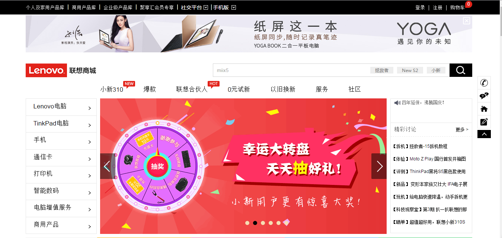

孙鸿亮
WebSun
一生行走于代码
我的信息
- 意向职位：
- 前端开发
- 期望待遇：
- 面议
- 现居住地：
- 江西赣州市
- 专 业：
- 信息与计算科学
- 学 历：
- 本科
- 电 话：
- 13979850665
- 邮 箱：
- 13979850665@163.com
- Q Q：
- 1317380902
我擅长的
- HTML
- CSS
- JavaScript
- Html5
- jQuery
- Bootstrap
- PHP
- Node.js
- Angularjs
我的心得
- 个人网站:
- 1937abcd.github.io
- 博客账号:
- blog.csdn.net/abcd_1937
学校经历
- 努力学好本专业课程内容，积极学习，做到不拖延、不懒散
- 在不影响专业课程前提下，结合自己兴趣爱好，专注学习前端技能
- 任职班级体育委员2年，配合校运动会积极响应班级人员参加，表现积极阳光向上
- 任职院系部长一年，组织多次文艺汇演，并达到预期良好效果
- 经常关注最新技术型博客（如阮一峰等等）以及若干微信公众号来进一步了解技术新方向
自我评价
- 精通HTML+CSS布局，遵循W3C规范，编写有语义化、模块化的页面代码
- 熟悉JavaScript,运用jQuery工具库，实现日常交互效果,契合最优用户体验
- 熟悉H5,如语义化标签、取代flash标签、canvas标签以及对移动端的响应式布局等等,运用其进行更优秀的开发项目
- 熟悉Ajax实现异步更新的方式，运用其(包括原生和jQuery的Ajax)实现懒加载等功能来进行对网页的优化,和请求网络数据加以运用
- 了解且能运用Angularjs框架和MVC架构模式进行数据源的获取和控制它的视图呈现
- 熟悉Bootsrap、Vue等常见前端框架,以及熟练运用作为半成品的这些框架进行项目开发
- 了解PHP这一后台语言,运用其能进行与后台的交互,实现对数据的获取、抓包,优雅地呈现在网页上
我的项目

仿联想页面
简介：高度还原联想商城页面,包括样式与特效
主要运用技术：HTML+CSS、javaScript


我想
希望加入一家优秀的公司，从事前端开发的工作，希望公司有扁平的管理结构，有良好的上下沟通渠道。